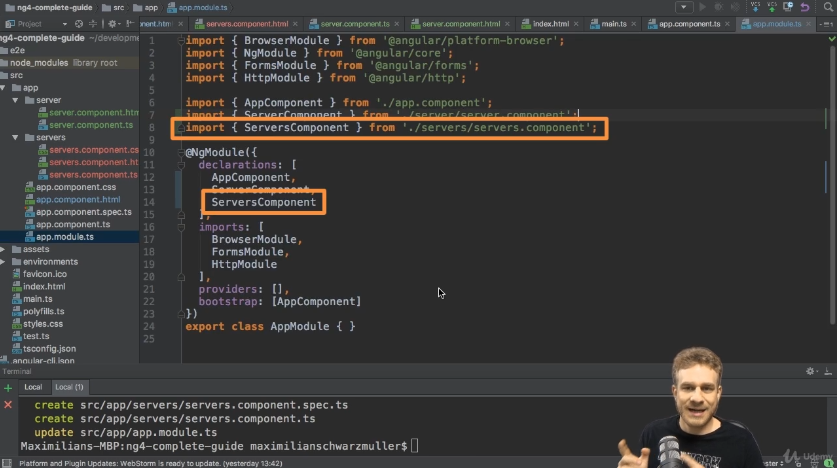

Notes
ng start process
1. main.ts file sadrzi code koji se izvrsava prvi.
2. .bootstrapModule function prima kao parametar AppModule
3. app.module.ts u bootstrap array se prima kao parametar AppComponent
4. Angular se pokrece i aktivira maint.ts. Zatim se bootstrap-je i prosledjuje app.module.ts kao parametar. U app.module.ts modulu govorimo Angularu da postoji app.component.ts. Angular analizira app.compnent.ts, pronalazi selector: 'app-root' i main index.html moze da pronadje/ubaci app-root>.
Component creating process
- Component Selector will be added in app.component.html file
- Component folder: component.ts/component.html/component.css CLI command: ng g c
- In app.component.ts => @NgModule { declarations/imports/providers/bootstrap}
- Register new Component in app.component adding it in declarations array
- Add import statement
Using Component process
- Add selector to app.component
- Nest Component within another Component by adding selector in component.html file of the other Component
- Check that the nested Component is added in app.module

- Use new nested Component by adding selector to app.component.html
- Picture shows two nested Components app.server and app.server in Component app.servers
Databinding
- => String interpolation
- => Property Binding
- <= Event Binding
- <==> Two-Way-Binding
String Interpolation vs Property Binding
- We use String interpolation if we want to output something in Html template ( print some text )
- We use Property Binding when we want to change some property of Html element, Directive or Component
- Don't mix String Interpolation & Property Binding